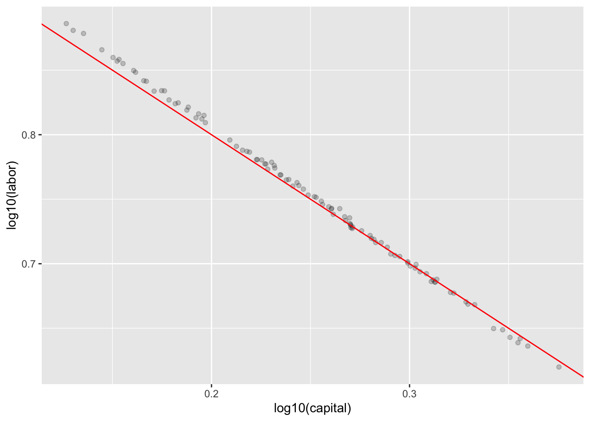

PKLdata <- tibble::tribble(
~ year, ~ product, ~labor, ~ capital,
1899, 100, 100, 100,
1900, 101, 105, 107,
1901, 112, 110, 114,
1902, 122, 118, 122,
1903, 124, 123, 131,
1904, 122, 116, 138,
1905, 143, 125, 149,
1906, 152, 133, 163,
1907, 151, 138, 176,
1908, 126, 121, 185,
1909, 155, 140, 198,
1910, 159, 144, 208,
1911, 153, 145, 216,
1912, 177, 152, 226,
1913, 184, 154, 236,
1914, 169, 149, 244,
1915, 189, 154, 266,
1916, 225, 182, 298,
1917, 227, 196, 335,
1918, 223, 200, 366,
1919, 218, 193, 387,
1920, 231, 193, 407,
1921, 179, 147, 417,
1922, 240, 161, 431,
)Factory production
derivatives
In the 1920s, economists Paul Douglas (University of Chicago) and Charles Cobb (Amherst College) undertook a study of the growth in US production value and the relative contributions of capital (e.g. machines, factories) and labor. This required a considerable effort in collecting and standardizing data on production, capital, and labor over about a quarter century. The paper reporting their results, “A Theory of Production” American Economic Review 1928 18(1), introduced a mathematical model of production that has become famous.
The data are nicely summarized by “Chart I” from the paper:
Examine Chart I to characterize mathematically the growth of capital, labor, and physical product over the 23-year period. What functional forms (\(K(t)\), \(L(t)\), \(P(t)\)) are appropriate given the types of axes used. State appropriate parameter values to approximate the general trends in each of the three functions.
The appropriate form for a model depends on the purpose for which the model is intended. Two of the questions they asked in their paper are:
- “May it be possible to determine … the relative influence upon production of labor as compared with capital?”
- “Can we measure the probable slopes of incremental product which are imputed to labor and to capital and thus give greater definiteness to what is at present purely an hypothesis with no quantitative values attached.” The hypothesis mentioned is often called the diminishing marginal return of the factors of production.
Here are the data upon which “Chart I” is based:
PKLdata |>
mutate(predicted = 0.25*capital + 0.75*labor) |>
gf_point(capital ~ year) |>
gf_line(capital ~ year) |>
gf_point(labor ~ year, color = "blue") |>
gf_line(labor ~ year, color = "blue") |>
gf_point(product ~ year, color = "magenta") |>
gf_line(product ~ year, color = "magenta") |>
gf_line(predicted ~ year, color = "red") |>
gf_refine(scale_y_log10())
Mod <- PKLdata |>
model_train(log10(product) ~ log10(labor) + log10(capital) - 1)
Mod |> R2() n k Rsquared F adjR2 p df.num df.denom
1 24 1 0.9998847 190741.3 0.9998794 0 1 22Mod |> conf_interval()# A tibble: 2 × 4
term .lwr .coef .upr
<chr> <dbl> <dbl> <dbl>
1 log10(labor) 0.655 0.751 0.848
2 log10(capital) 0.163 0.252 0.341Bootstrapping the distribution of coefficients:
Sims <-
PKLdata |>
take_sample(replace = TRUE) |>
model_train(log10(product) ~ log10(labor) + log10(capital) - 1) |>
conf_interval() |>
select(term, .coef) |>
trials(100)
Sims |>
tidyr::pivot_wider(id_cols = .trial,
names_from = term,
values_from = .coef) |>
gf_point(`log10(labor)` ~ `log10(capital)`, alpha = 0.2) |>
gf_abline(slope = -1, intercept = 1, color = "red")
The Cobb-Douglas production function is a simple mathematical model of how labor \(L\) and capital \(K\) jointly contribute to the production level \(P\): \[P(L, K) \equiv A K^\alpha L^{1-\alpha}\]
For simplicity, imagine that capital and labor are both measured in dollars per year—the amount that the labor force is paid in a year and the amount that one could rent a factory for a year.
If production \(P(L, K)\) is also measured in dollars per year (say, the value of the factory output each year), what is the dimension of the constant \(A\)?
According to the model, what happens to production if both \(K\) and \(L\) are increased by a factor constant factor \(\beta\)? (Hint: Substitute in \(K \rightarrow \beta K\) and \(L \rightarrow \beta L\) and simplify.)
Consider a particular factory with \(A = 2.5\) and exponent \(\alpha = 0.33\). Using Listing 1, implement the function \(P (K, L)\).
Use your function to compute the production of the factory for \(K = 10\) and \(L=20\). Confirm that you get \(P(K=10,L=20)= 39.78\)
- A factory that rents for $10/yr and where the labor costs $20/yr is silly. Calculate the value \(P (K, L)\) when \(K\) is $10 million/yr and \(L\) is $20 million/yr.
We’ll stick with numbers like \(K = 10\) and \(L = 20\) to keep things easy to read, but feel free to interpret them as “millions of dollars.”
Congratuations! Based on your ability to use the Cobb-Douglas model, you’ve been promoted to manager of the factory. One of your jobs is to decide how to balance expenditures on capital and labor to raise productivity.
One basic question is what happens when you raise either capital or labor, holding the other one constant. Using appropriate partial derivatives evaluated at \(K = 10\), \(L = 20\), calculate:
- The rate at which an increase in spending on labor will increase productivity.
- The rate at which an increase in spending on capital will increase productivity.
- Based on the above, if you had to choose between spending on capital or labor, and your goal is to increase productivity as much as possible, which would you spend on, capital or labor?
Your economist friend tells you to watch out for “diminishing marginal returns.” This means that, as you increase spending on either labor or capital, the rate of increase in production tends to diminish. You’ll still get increased production as you increase spending, but it won’t increase as fast at high levels of expense as at low levels.
Compute the partial derivative of production with respect to labor at a higher level of labor, say \(L = 21\), but holding \(K = 10\). How does the value of the derivative at \(L = 21\) compare to that at \(L = 20\)? Is this consistent with the idea of “diminishing marginal returns” for labor?
Do the same for the partial derivative of production with respect to capital, evaluated at \(L = 20\) and \(K = 11\). How does the value of the derivative at \(K = 11\) compare to that at \(K = 10\). Is this consistent with the idea of “diminishing marginal returns” for capital?
Use an appropriate partial second derivative to find the rate of diminishing partial returns for labor at \(L = 20\) and \(K = 10\). Show that it is consistent with the difference you got in Part (d).
Use an appropriate partial second derivative to find the rate of diminishing partial returns for capital at \(L = 20\) and \(K = 10\). Show that it is consistent with the difference you got in Part (3).
You might think of the rate of increase in production with respect to labor as the “value rate” of labor. Similarly, the rate of increase in production with respect to capital is the value rate of capital. Due to diminishing marginal returns, an increase in labor spending, holding capital constant, decreases the value rate of labor. Similarly, an increase in capital spending holding labor spending constant decreases the value rate of capital.
But what happens to the value rate of labor when capital spending is increased? You can answer this by comparing the value rate of labor, \(\partial_L P\) , at two different capital spending levels, say \((K = 10,L = 20)\) and \((K = 11,L = 20)\). Notice that even though you’re looking at the rate with respect to labor, you’re changing the expenditure on capital.
- Compare \(\partial_L P\) at slightly different values of \(K\) , holding \(L\) constant at 20. Does the value rate of labor increase or decrease with spending on capital?
- Similarly, compare \(\partial_K P\) at slightly different values of \(L\), holding \(K\) constant at 20. Does the value rate of labor increase or decrease with spending on capital?
- Finally, construct and evaluate the mixed partial derivative, $_L _K P at \(K = 10\), \(L = 20\). Compare this to the results you got for the way \(\partial_K P\) changes with increasing \(L\) and the way \(\partial_L P\) changes with increasing \(K\).
- Concrete production: https://www.ijrbsm.org/pdf/v2-i5/4.pdf